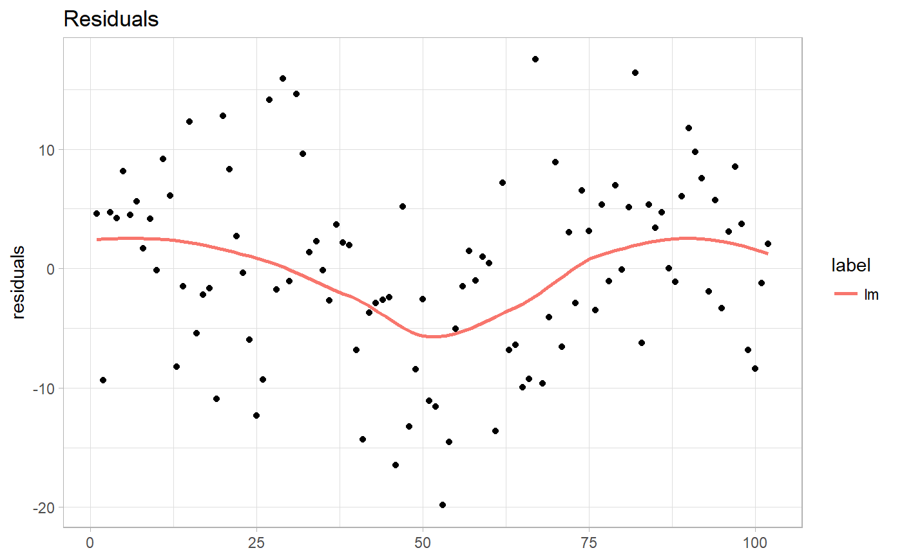
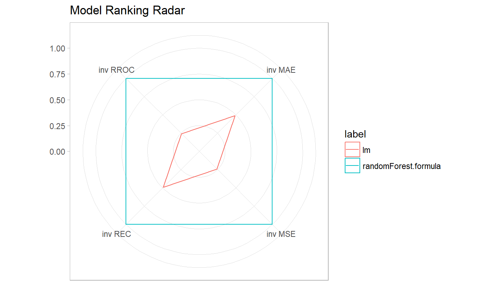

Model diagnostic plots
This function provides several diagnostic plots for regression and classification models.
# S3 method for modelAudit plot(x, ..., type = "Residual", ask = TRUE, grid = TRUE) # S3 method for modelFit plot(x, ..., type = "Residual", ask = TRUE, grid = TRUE) # S3 method for modelPerformance plot(x, ..., type = "Residual", ask = TRUE, grid = TRUE) # S3 method for modelResiduals plot(x, ..., type = "Residual", ask = TRUE, grid = TRUE) # S3 method for observationInfluence plot(x, ..., type = "Residual", ask = TRUE, grid = TRUE)
Arguments
| x | object of class modelAudit, modelResiduals or observationInfluence. |
|---|---|
| ... | other arguments dependent on the type of plot or additionl objects of class modelAudit |
| type | the type of plot. Possible values: 'ACF', 'Autocorrelation', 'CooksDistance', 'HalfNormal', 'Residuals', 'LIFT', ModelPCA', 'ModelRanking', ModelCorrelation', 'Prediction', 'REC', 'Resiual', 'ResidualBoxplot',ResidualDensity', 'ROC', 'RROC', ScaleLocation', 'TwoSidedECDF' (for detailed description see functions in see also section). |
| ask | logical; if TRUE, the user is asked before each plot, see |
| grid | logical; if TRUE plots will be plotted on the grid. |
See also
plotACF, plotAutocorrelation, plotCooksDistance,
plotHalfNormal, plotResidual, plotResidualBoxplot, plotLIFT, plotModelPCA, plotModelRanking, plotModelCorrelation,
plotPrediction, plotREC, plotResidualDensity, plotResidual, plotROC,
plotRROC, plotScaleLocation, plotTwoSidedECDF
Examples
library(car)#>lm_model <- lm(prestige~education + women + income, data = Prestige) lm_au <- audit(lm_model, data = Prestige, y = Prestige$prestige) plot(lm_au)library(randomForest) rf_model <- randomForest(prestige~education + women + income, data = Prestige) rf_au <- audit(rf_model, data = Prestige, y = Prestige$prestige) plot(lm_au, rf_au, type = "ModelRanking")#>